Khu quản trị viết bằng tiếng Anh. Mọi chữ có trên màn hình được in thành thế này để bạn dò cho dễ — và đã được đối chiếu với màn hình thật. Ảnh chụp lấy từ màn hình thật; vòng cam khoanh chỗ cần bấm.
1Đăng nhập
- Địa chỉ
- aluminumboss.com/Admin
- Lần đầu
admin/changeme
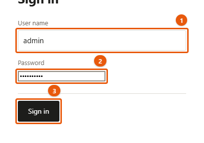
Máy chủ sẽ bắt đổi mật khẩu ngay, trước khi cho vào bất cứ màn hình nào:
- Current password: gõ
changeme - New password và New password again: mật khẩu mới, ít nhất 10 ký tự
- Bấm Change password
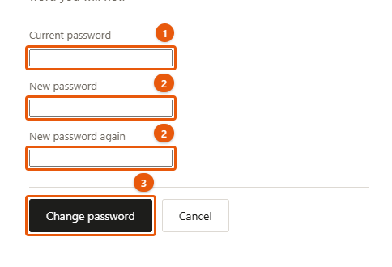
Ghi mật khẩu mới vào chỗ an toàn. Không có nút "quên mật khẩu" — quên thì nhờ người kỹ thuật (mục 11). Việc đó mất khoảng một phút và không mất lịch sử sửa.
- Đổi mật khẩu về sau: bấm chữ admin ở góc trên bên phải
- Đăng xuất: Sign out, cũng ở góc trên bên phải
2Khu quản trị có những gì
Vào /Admin là vào thẳng màn hình sửa trang. Thanh trên cùng có năm mục:
| Nút | Dùng để |
|---|---|
| Edit pages | Sửa chữ và ảnh ngay trên trang — dùng nhiều nhất |
| Content | Thêm, ẩn/hiện, đổi thứ tự, xoá các mục (bài tin, màu, dự án…) |
| Pictures | Kho ảnh: xem, tải lên, xoá |
| Enquiries | Đơn khách gửi qua form liên hệ |
| History | Các bản cũ — lấy lại khi lỡ tay |
Góc phải: View site mở trang thật ở tab mới; admin để đổi mật khẩu; Sign out.
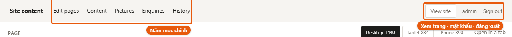
3Sửa chữ trên một trang
Màn hình chia hai cột: trái là các ô nhập, phải là trang web thật.
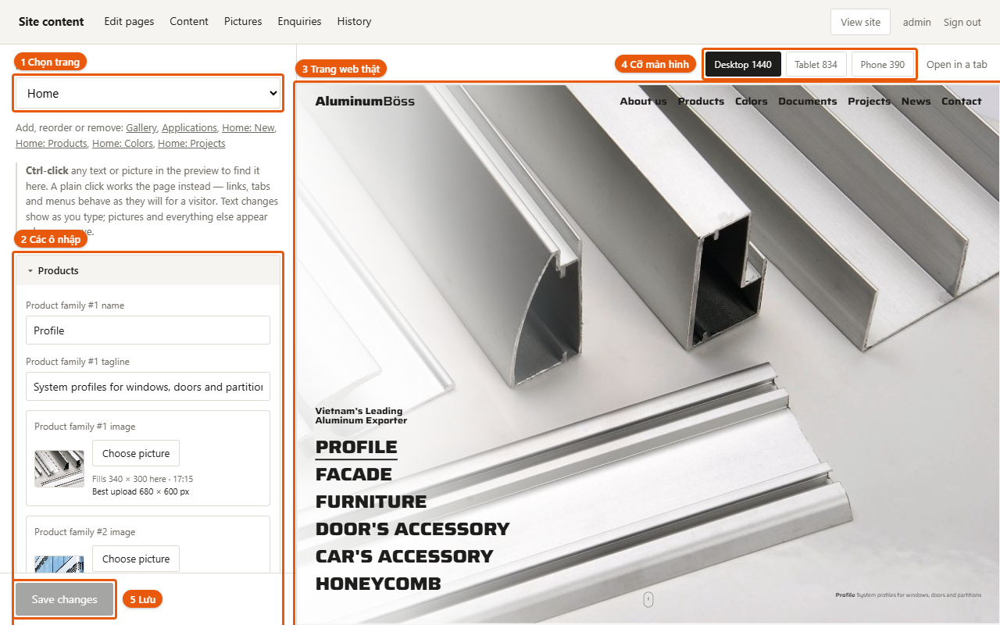
Chọn trang cần sửa — ba cách
- Chọn ở ô PAGE trên cùng cột trái
- Bấm vào menu hoặc liên kết ngay trong khung bên phải — khung đi sang trang đó, cột trái đi theo
- Từ Content, bấm Edit ở dòng của mục cần sửa. Nhanh nhất khi cần sửa một bài tin, một màu, một dự án cụ thể.
Chọn chữ cần sửa
Giữ phím Ctrl rồi bấm vào chữ trong khung bên phải. Máy Mac: giữ Cmd.
Ô tương ứng ở cột trái sẽ sáng lên. Bấm thường — không giữ Ctrl — thì trang chạy như thật: bấm menu là chuyển trang, bấm tab là đổi tab.
Mỗi ô có một dòng chữ nhỏ phía trên cho biết nó là gì — ví dụ Article #1 summary là phần tóm tắt của bài đang mở.
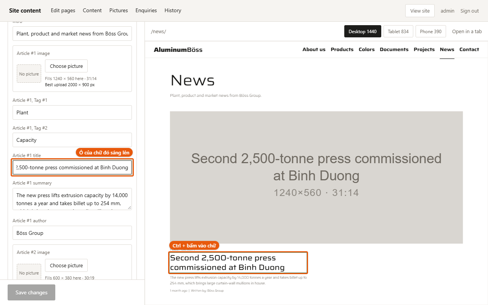
Lưu
- Gõ vào ô — chữ trong khung bên phải đổi ngay khi gõ
- Bấm Save changes ở đáy cột trái
- Dòng nhỏ bên cạnh báo 1 change saved. Khách vào trang là thấy luôn, không chờ gì cả.
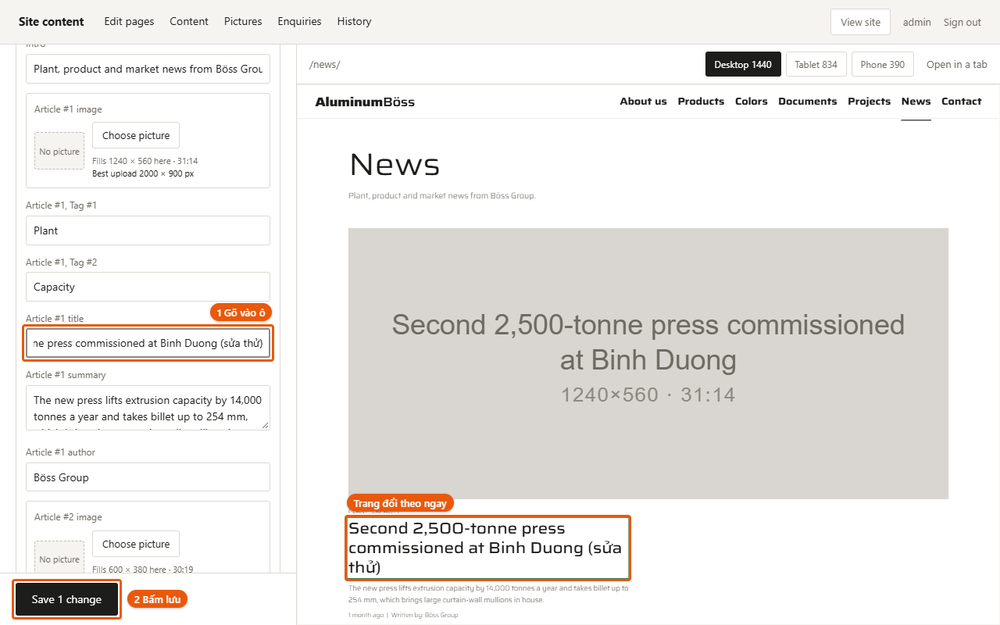
Chưa bấm Save changes thì chưa lưu gì. Chuyển trang hoặc đóng tab khi đang sửa dở, máy sẽ hỏi lại.
Xem trên điện thoại
Ba nút Desktop 1440 Tablet 834 Phone 390 chỉ đổi cỡ khung xem. Nội dung chỉ có một bản: sửa một lần là đúng cho mọi màn hình. Open in a tab mở trang đó trong tab riêng.
4Đổi ảnh
Ô ảnh có nút Choose picture. Bấm vào mở kho ảnh:
- Bấm một ảnh có sẵn để chọn
- Add a picture để tải ảnh mới từ máy lên
- No picture để bỏ ảnh đi
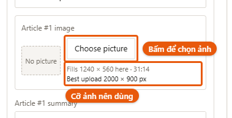
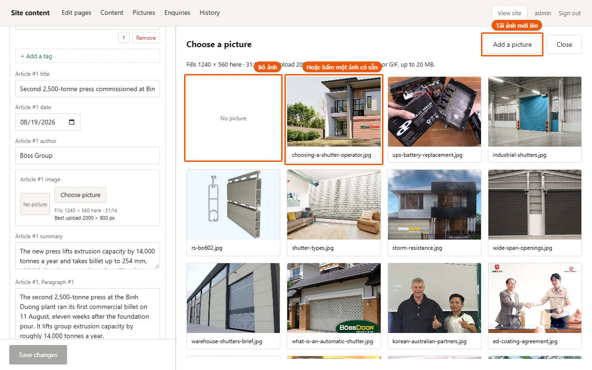
Thay một ảnh đang có thì khung xem đổi ngay. Ô ảnh đang trống thì phải bấm Save changes mới thấy ảnh hiện ra.
Cỡ ảnh. Dưới mỗi ô ảnh có dòng gợi ý, ví dụ Best upload 680 × 600 px. Máy chủ không tự thu nhỏ ảnh, nên giữ cạnh dài dưới 2000 px. Ảnh chụp thẳng từ điện thoại (thường 4000 px, vài MB) nên thu nhỏ trước khi tải lên — không thì trang chậm với mọi người xem.
Nhận JPG, PNG, WebP, GIF — tối đa 20 MB.
Xoá ảnh ở màn hình Pictures: máy hỏi lại và cảnh báo trang nào còn dùng ảnh đó sẽ bị trống chỗ. Ảnh đã xoá không lấy lại được ở History.
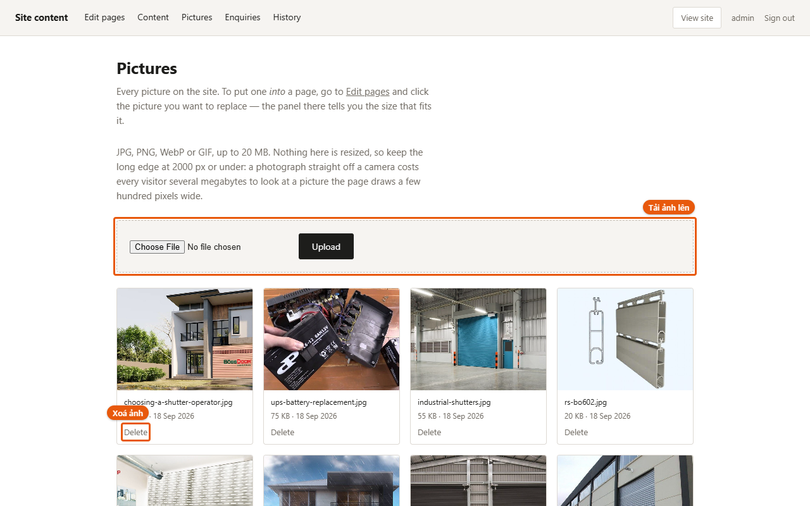
5Thêm, ẩn, đổi thứ tự, xoá
Content liệt kê mọi loại nội dung kèm số lượng. Bấm vào một loại, mỗi dòng có:
| Nút | Làm gì |
|---|---|
| Shown / Hidden | Bấm để ẩn hoặc hiện. Mục ẩn vẫn còn, chỉ không hiện trên trang. |
| ↑ ↓ | Đổi thứ tự — thứ tự ở đây là thứ tự trên trang |
| Edit | Mở màn hình sửa, đúng trang của mục đó |
| Delete | Xoá. Máy hỏi lại Yes, delete it hay Keep it, và cho biết có chỗ nào khác đang trỏ tới mục đó không |
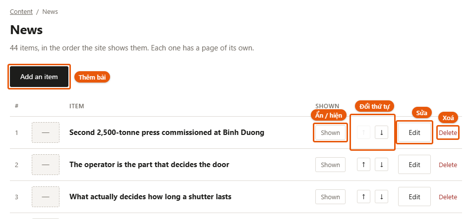
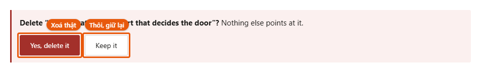
Nút Add an item ở đầu danh sách thêm một mục trống lên dòng đầu tiên.
Mục mới hiện ngay trên trang công khai, dù còn trống. Thêm xong, bấm Shown ở dòng đó để thành Hidden; viết xong mới bấm lại cho hiện.
Lần lưu tên đầu tiên cũng đặt luôn địa chỉ. Mục mới có một tên tạm như new-3f9a2c. Lần đầu bạn gõ tiêu đề và lưu, địa chỉ trang của nó thành tiêu đề ấy — và sau đó không đổi nữa, vì đổi là làm hỏng mọi đường dẫn người khác đã lưu. Gõ tiêu đề cho chuẩn ngay lần đầu.
Một loại không thêm được: Export routes — một tuyến cần hàng chục toạ độ trên bản đồ, phải nhờ người kỹ thuật. Ẩn, đổi thứ tự, xoá và sửa chữ thì vẫn làm được. Factories thì thêm được — xem ngay dưới đây.
Bốn loại "Home:" — Home: New Home: Products Home: Colors Home: Projects — là kệ trưng bày trên trang chủ, không phải nơi viết nội dung. Mỗi dòng có một ô chọn bài và nút Set: chọn bài muốn trưng rồi bấm Set. Chữ và ảnh của bài thì sửa ở News, Products, Colors, Projects — sửa một lần, mọi nơi đổi theo.
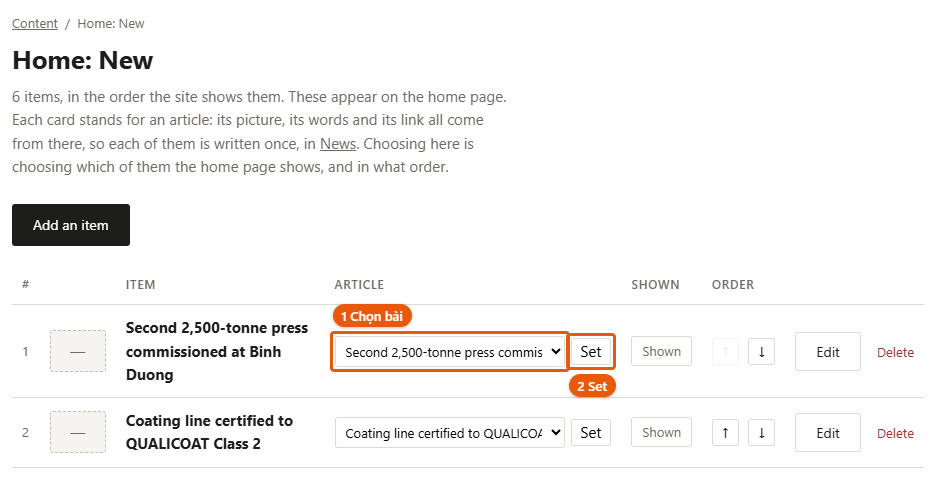
Thêm nhà máy hoặc kho
Bản đồ nhà máy trên trang chủ vẽ mỗi điểm từ ô location on the map. Chọn tỉnh ở đó thì ghim dời tới tỉnh đó; ô province as written chỉ là dòng chữ in dưới tên, không dời ghim.
- Content → Factories → Add an item. Điểm mới lên dòng 1, chưa có trên bản đồ cho tới khi bạn chọn tỉnh.
- Bấm Edit ở dòng 1. Cột trái mở nhóm Factories, các ô của điểm mới ở trên cùng.
- Factory #1 location on the map: chọn tỉnh/thành. Ghim đặt ở tỉnh lỵ.
- Factory #1 type: Factory (ghim tròn) hoặc Warehouse (ghim vuông; bản đồ tự thêm dòng chú giải Warehouse).
- Điền tên, province as written, mô tả, công suất, năm hoạt động.
- Bấm Save changes.
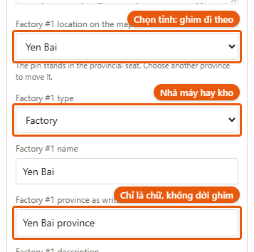
Con số lớn cạnh tiêu đề tự đếm số nhà máy (không đếm kho). Nhưng dòng tiêu đề như Five factories, là chữ bạn gõ — thêm hay bớt nhà máy thì sửa lại chữ đó cho khớp.
Danh sách là 63 tỉnh cũ (trước sáp nhập 2025): ghim chỉ cần đúng vùng. Muốn ghi tên tỉnh mới thì gõ vào ô province as written.
6Đăng một bài tin mới
- Content → News → Add an item. Máy báo Added. It is at the top of the list.
- Ngay lập tức bấm Shown ở dòng 1 để thành Hidden — bài trống đã hiện trên trang
- Bấm Edit ở dòng 1. Cột trái hiện nhóm News với các ô của bài.
- Điền Article #1 title (tiêu đề), Article #1 summary (tóm tắt), Article #1 author (tác giả), và ảnh bằng Choose picture
- Ngày đăng — ô Article #1 date: bấm biểu tượng lịch ở cuối ô rồi chọn ngày. Trên trang, ngày hiện thành chữ, ví dụ 28 September 2026.
- Thân bài — bấm Add a paragraph. Máy hỏi Save your … changes first? — bấm OK: máy lưu những gì bạn vừa gõ, thêm một ô đoạn văn trống, và đặt sẵn con trỏ trong ô đó. Gõ đoạn văn. Cần đoạn nữa thì bấm Add a paragraph lần nữa.
- Thẻ (chữ ngắn hiện trên bài, ví dụ Plant, Product) — bấm Add a tag, làm y như đoạn văn
- Bấm Save changes. Địa chỉ bài lúc này thành tiêu đề — xem lưu ý ở mục 5.
- Quay về Content → News, bấm Hidden để thành Shown
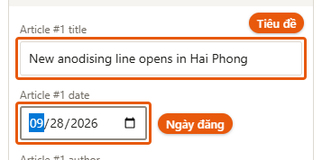
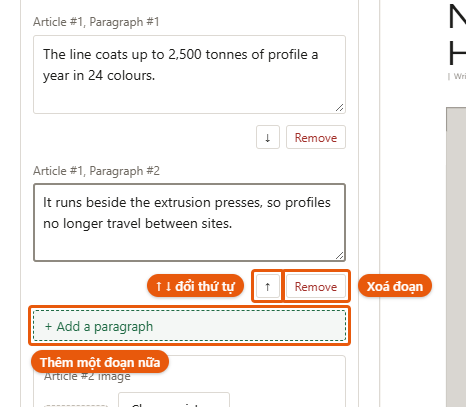
Dưới mỗi đoạn văn và mỗi thẻ có các nút nhỏ:
| Nút | Làm gì |
|---|---|
| ↑ ↓ | Đưa đoạn đó lên hoặc xuống một bậc. Đoạn đầu không có ↑, đoạn cuối không có ↓. |
| Remove | Xoá đoạn đó. Đoạn đang có chữ thì máy hỏi lại, kèm mấy chữ đầu của đoạn. |
Thêm, xoá, đổi thứ tự đoạn được lưu ngay, không chờ Save changes — nên máy mới hỏi lưu phần đang gõ dở trước. Mỗi lần như vậy đều có một bản cũ trong History; lỡ tay thì lấy lại được (mục 9).
Ngày đăng quyết định chỗ đứng của bài: danh sách tin xếp theo ngày, mới nhất ở trên. Bài chưa có ngày nằm cuối danh sách — cột trái nhắc Not dated yet dưới ô ngày cho tới khi bạn chọn.
Bài đã có sẵn sửa y như vậy: Content → News → Edit ở dòng bài đó. Ngày, đoạn văn và thẻ của bài cũ đều sửa, thêm, xoá được.
7Phần hiện trên Google
Nhóm Search result, ở cuối cột trái ngay trước Site — header and footer:
| Ô | Là gì |
|---|---|
| Search title | Tiêu đề trên kết quả tìm kiếm và trên tab trình duyệt |
| Search description | Dòng mô tả dưới tiêu đề trong kết quả tìm kiếm |
| Share picture | Ảnh hiện khi ai đó chia sẻ trang lên Facebook, Zalo… Chỉ có ở các trang danh sách; trang của một bài thì dùng luôn ảnh của bài. |
Để trống cũng được. Chữ xám mờ trong ô là thứ trang đang tự dùng — với một bài tin thì đó là tiêu đề và phần tóm tắt của bài. Chỉ gõ vào khi muốn nói khác đi.
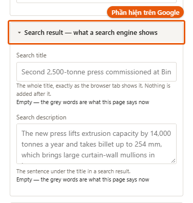
Dưới ô có đếm ký tự. Khoảng 60 và khoảng 160 là chỗ Google thường cắt bớt, không phải giới hạn của trang: gõ dài hơn vẫn lưu đủ.
8Đơn khách gửi
Màn hình Enquiries: đơn mới nhất ở trên cùng. Chưa có đơn nào thì ghi Nothing yet.
Đơn không tự gửi về email — phải vào màn hình này xem. Muốn có email báo thì cần làm thêm.
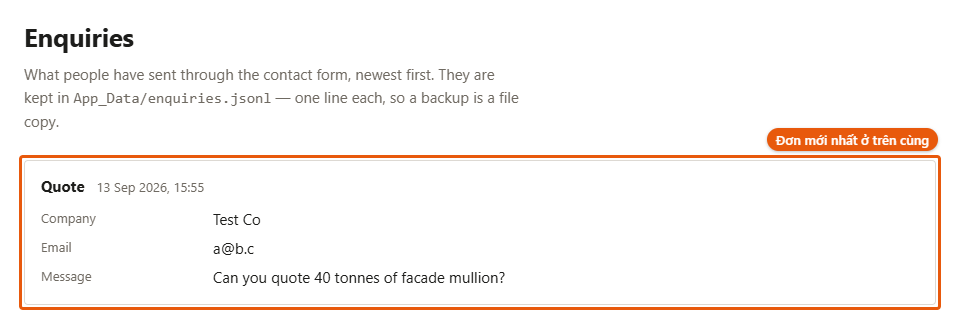
Tự thử xem form còn chạy không
- Mở aluminumboss.com/contact ở tab khác, hoặc trên điện thoại
- Trang có bốn ô. Bấm START trong ô Request a quotation — ba ô kia cũng dẫn tới form: REQUEST SAMPLES, ASK AN ENGINEER, APPLY
- Điền các ô có dấu
*, và ghi rõ chữ thử trong nội dung để sau khỏi nhầm - Bấm nút gửi ở cuối form. Trang báo Thank you — we have your request and will reply within one working day.
- Quay lại Enquiries, tải lại trang: đơn vừa gửi phải nằm trên cùng
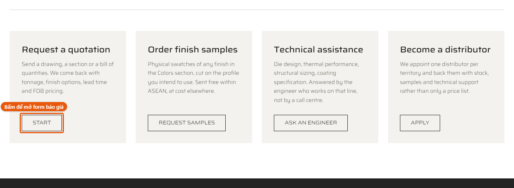
Mỗi địa chỉ mạng chỉ gửi được 8 đơn một giờ — đó là chặn thư rác. Thử nhiều lần liên tiếp sẽ bị chặn: đợi sang giờ sau, hoặc thử từ mạng khác (tắt Wi-Fi, dùng 4G).
9Lỡ tay thì lấy lại
Mỗi lần lưu, bản cũ được giữ lại. Màn hình History liệt kê lúc lưu (SAVED), loại nội dung (CONTENT), ai lưu (BY), dung lượng (SIZE).
- Các nút tròn phía trên — Everything, news, site… — lọc theo loại nội dung
- Look at it mở bản đó ra xem (dạng kỹ thuật — chủ yếu để xem đúng lúc nào)
- Restore this version đưa về bản đó
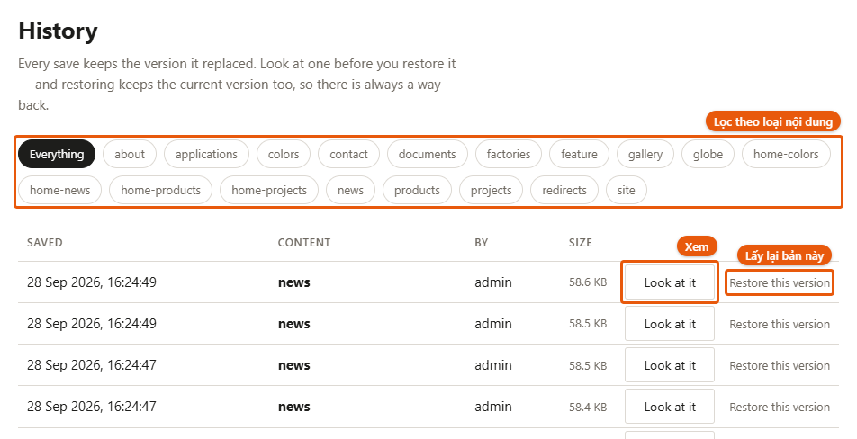
Restore đưa CẢ loại nội dung đó về bản cũ, không phải một ô. Khôi phục news về hôm qua để sửa một lỗi chính tả thì mọi bài tin sửa từ hôm qua tới nay cũng quay về. Sửa nhầm một chữ thì gõ lại chữ đó là an toàn hơn.
Trước khi khôi phục, máy lưu bản hiện tại thành một dòng (before restore) — khôi phục nhầm thì khôi phục lại dòng đó là xong.
Mỗi loại giữ 50 bản gần nhất. Ảnh và đơn liên hệ không nằm trong History.
Tên loại nội dung trong History là tên tệp. Tra nhanh:
| Tên | Chứa gì |
|---|---|
news | Tất cả bài tin |
products | Các dòng sản phẩm |
colors | Các màu hoàn thiện |
projects | Các dự án |
documents | Tài liệu tải về |
about | Trang giới thiệu (About us) |
contact | Trang liên hệ và các form |
site | Menu, chân trang, tên thương hiệu, tiêu đề tìm kiếm của các trang danh sách |
home-news home-products home-colors home-projects | Bốn kệ trên trang chủ |
gallery applications feature | Các khối ảnh và tab trên trang chủ |
globe factories | Tuyến xuất khẩu và nhà máy trên trang chủ |
redirects | Chuyển hướng địa chỉ cũ — máy tự ghi, không cần đụng tới |
10Khi có trục trặc
| Hiện tượng | Làm gì |
|---|---|
| Bấm Save changes, báo Could not reach the server. Nothing was saved. | Chưa lưu gì, chữ vẫn còn trong ô. Kiểm tra mạng rồi bấm Save lại. Vẫn vậy thì chép chữ vừa sửa ra chỗ khác, tải lại trang (đăng nhập lại nếu được hỏi), dán vào và lưu. |
| Báo … could not be written | Một phần không lưu được. Tải lại trang để xem phần nào đã lưu, rồi sửa lại phần còn thiếu. |
| Sửa xong mà trang ngoài chưa đổi | Tải lại trang bằng F5. |
| Trình duyệt báo "không bảo mật" | Kiểm tra địa chỉ có phải https://aluminumboss.com. Gõ http:// thì trang tự chuyển sang https://. |
| Quên mật khẩu | Nhờ người kỹ thuật làm theo mục 11. |
| Cả trang không vào được | Nhờ người kỹ thuật — tools/deploy/README.md, mục Khi hong. |
11Phần dành cho người kỹ thuật
Chi tiết đầy đủ ở tools/deploy/README.md. Tóm tắt:
Máy chủ 202.92.6.174, SSH cổng 24700, đăng nhập bằng khoá ~/.ssh/qlweb2_vps. Ứng dụng .NET 8 sau nginx, chứng chỉ Let’s Encrypt tự gia hạn, CSDL MySQL chỉ nghe 127.0.0.1.
Đưa bản mã nguồn mới lên
bash tools/deploy/push.shLệnh này không đụng vào nội dung khách đã sửa trên máy chủ — dữ liệu trên máy chủ mới là bản thật. Chỉ thêm --kem-noi-dung khi thật sự muốn đẩy nội dung từ máy làm việc lên, và lúc đó nó ghi đè thật.
Quên mật khẩu admin
Xoá dòng tài khoản rồi khởi động lại; máy chủ tự tạo lại admin / changeme và bắt đổi mật khẩu như lần đầu. Lịch sử sửa còn nguyên.
ssh -p 24700 -i ~/.ssh/qlweb2_vps root@202.92.6.174 "mysql qlweb2 -e 'DELETE FROM AdminUsers' && systemctl restart qlweb2"Sao lưu
Tự chạy lúc 00:00 mỗi đêm (cron), giữ 3 bản gần nhất, trong /srv/qlweb2/sao-luu/: qlweb2-*.sql.gz (CSDL: tài khoản + lịch sử), noi-dung-*.tar.gz (chữ của trang, ảnh, đơn liên hệ) và ma-nguon-*.tar.gz (bản ứng dụng đang chạy + cấu hình máy chủ). Cách khôi phục: tools/deploy/README.md, mục Sao luu.